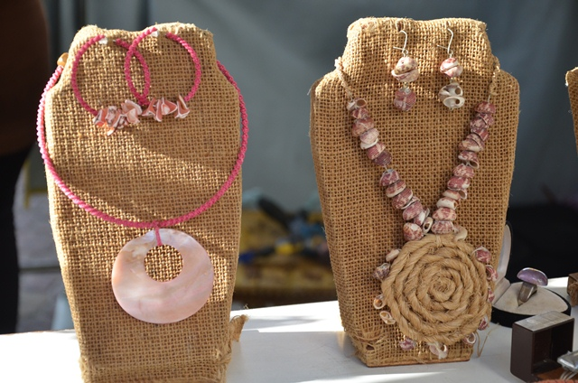

HOME
PRODUTOS
CONTATO
PARCEIROS
 PRODUTOS
PRODUTOS
Há 14 anos nossa maior conquista é você
Explore nossos corredores virtuais e descubra uma variedade de produtos, desde esculturas em madeira habilmente
esculpidas até tecidos bordados à mão, cerâmicas encantadoras, cestarias intrincadas e muito mais. Cada item é
uma obra de arte única, carregada de significado cultural e feita com amor e dedicação.
Materiais em crochê
Apresentamos nosso encantador conjunto de sousplat e porta-copos feitos à mão em crochê, uma expressão
genuína da arte artesanal nordestina. Cada peça é meticulosamente confeccionada por habilidosas artesãs,
utilizando fios macios e duráveis, criando assim uma combinação perfeita de beleza e funcionalidade.
Veja mais
Acessórios artesanais
coleção exclusiva de acessórios artesanais, uma celebração da criatividade e habilidade dos artesãos do
Nordeste brasileiro. Cada peça é uma obra de arte única, cuidadosamente elaborada à mão com materiais
naturais e técnicas tradicionais, resultando em acessórios que irradiam autenticidade e charme.
Veja mais
Esquadrias
Apresentamos nossas esquadrias artesanais, uma fusão de elegância e durabilidade que eleva o padrão de
qualidade em sua residência ou projeto arquitetônico. Cada peça é cuidadosamente elaborada por nossos hábeis
artesãos, utilizando técnicas tradicionais e materiais de alta qualidade para garantir um acabamento
impecável e uma funcionalidade excepcional. Desde janelas ornamentadas até portas.
Veja mais
Talheres de madeira
Apresentamos nossos encantadores talheres de madeira, uma adição encantadora e eco-friendly para sua mesa.
Cada peça é esculpida à mão por habilidosos artesãos, utilizando madeira sustentável, garantindo uma
combinação perfeita de beleza natural e funcionalidade. Com designs elegantes e acabamento suave, nossos
talheres não apenas complementam suas refeições, mas também destacam o compromisso com a sustentabilidade e a
autenticidade artesanal.
Veja mais
Vaso artesanal
Apresentamos nosso vaso artesanal, uma peça única que acrescenta um toque de beleza e originalidade a
qualquer ambiente. Cuidadosamente moldado à mão por talentosos artesãos, este vaso é uma expressão autêntica
de criatividade e habilidade artesanal. Feito com materiais naturais e técnicas tradicionais, cada vaso é
uma obra de arte exclusiva, carregada de charme e personalidade. Adicione uma pitada de estilo e elegância à
sua decoração com este vaso artesanal, que não só enfeita, mas também conta uma história de tradição e
paixão pelo artesanato.
Veja mais
 Encontre a loja mais próxima de você ou se preferir, entre em contato conosco pelos canais digitais:
Encontre a loja mais próxima de você ou se preferir, entre em contato conosco pelos canais digitais:

Fale conosco
2024 | Todos os direitos reservados © Vila do Artesão
Lojas


Linha de Produtos
Crochê - Bordados diversos
Porcelanato
Materiais em tecido
Talheres em madeira
Garrafas de areia
